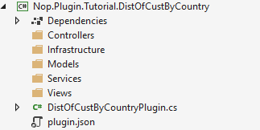
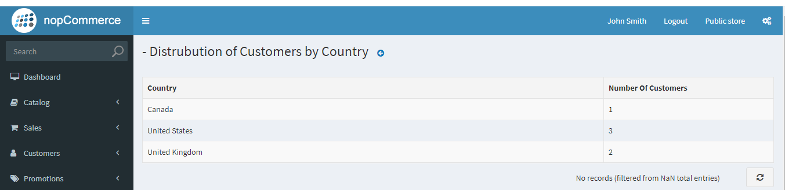

Guide to creating a page containing a reporting table of DataTables
In this tutorial, we will be learning about how to extend the functionality of the nopCommerce with custom functionality for the admin panel, and create a page containing a table with some data as a report. So before starting on this tutorial you need to have some prior knowledge and understanding of some of the topics.
If you are not familiar with the above topics, we highly recommend you to learn about those first.
So, this tutorial will show you how to create a table that displays information about the distribution of users by country (based on billing address). Let's walk through the step-by-step process of creating the aforementioned functionality.
Create a nopCommerce plugin project
I am assuming that you already know where and how to create a nopCommerce plugin project and configure the project according to nopCommerce standards. If you don't know then you can visit this page link to know how to create and configure the nopCommerce plugin project.
If you have followed the above-provided link to create and configure your plugin project then you may end up with a folder structure like this.

#Models/ CustomersDistribution.cs
First let's create a model named CustomersDistribution inside Models folder.
public record CustomersDistribution : BaseNopModel
{
/// <summary>
/// Country based on the billing address.
/// </summary>
public string Country { get; set; }
/// <summary>
/// Number of customers from specific country.
/// </summary>
public int NoOfCustomers { get; set; }
}
Also let's add the search model named CustomersByCountrySearchModel inside Models folder.
public record CustomersByCountrySearchModel : BaseSearchModel
{
}
nopCommerce uses the repository pattern for data access which is ideal for dependency injection mechanism.
#Services/ ICustomersByCountry.cs
Now let us create a service that fetches required data from a database. For service, we will create an Interface and create a service class implementing that interface.
public interface ICustomersByCountry
{
Task<List<CustomersDistribution>> GetCustomersDistributionByCountryAsync()
}
Here we have only one method description since for the sake of this plugin we do not need any other methods.
#Services/ CustomersByCountry.cs
Here we are creating a class named CustomersByCountry which is inherent from ICustomersByCountry interface.
public class CustomersByCountry : ICustomersByCountry
{
private readonly IAddressService _addressService;
private readonly ICountryService _countryService;
private readonly ICustomerService _customerService;
public CustomersByCountry(IAddressService addressService,
ICountryService countryService,
ICustomerService customerService)
{
_addressService = addressService;
_countryService = countryService;
_customerService = customerService;
}
public async Task<List<CustomersDistribution>> GetCustomersDistributionByCountryAsync()
{
return await _customerService.GetAllCustomersAsync()
.Where(c => c.ShippingAddressId != null)
.Select(c => new
{
await (_countryService.GetCountryByAddressAsync(_addressService.GetAddressById(c.ShippingAddressId ?? 0))).Name,
c.Username
})
.GroupBy(c => c.Name)
.Select(cbc => new CustomersDistribution { Country = cbc.Key, NoOfCustomers = cbc.Count() }).ToList();
}
}
Also, we are implementing the method that retrieves data from the database. We used this approach so that we can use dependency injection techniques to inject this service into the controller.
#Controllers/CustomersByCountryController.cs
Now let's create a controller class. A good practice to name plugin controllers is like {Group}{Name}Controller.cs. For example, TutorialCustomersByCountryController, here {Tutorial}{CustomersByCountry}Controller. But remember that it is not a requirement to name the controller with {Group}{Name} it is just recommended way by nopCommerce for naming convention but the Controller part in the name is the requirement of .Net MVC.
[AutoValidateAntiforgeryToken]
[AuthorizeAdmin] //confirms access to the admin panel
[Area(AreaNames.Admin)] //specifies the area containing a controller or action
public class DistOfCustByCountryPluginController : BasePluginController
{
private readonly ICustomersByCountry _service;
public DistOfCustByCountryPluginController(ICustomersByCountry service)
{
_service = service;
}
[HttpGet]
public IActionResult Configure()
{
CustomersByCountrySearchModel customerSearchModel = new CustomersByCountrySearchModel
{
AvailablePageSizes = "10"
};
return View("~/Plugins/Tutorial.DistOfCustByCountry/Views/Configure.cshtml", customerSearchModel);
}
[HttpPost]
public async Task<IActionResult> GetCustomersCountByCountry()
{
try
{
return Ok(new DataTablesModel { Data = await _service.GetCustomersDistributionByCountryAsync() });
}
catch (Exception ex)
{
return BadRequest(ex);
}
}
}
In the controller, we are injecting the ICustomersByCountry service we created previously to get data from a database. Here we have created two Actions one is of type HttpGet and another of type HttpPost. The Configure action is returning a view named "Configure.cshtml" which we haven't created yet. And GetCustomersCountByCountry action which is using an injected service to retrieve data and returning data in the JSON format. This action is going to be called by the data table which expects a response as DataTablesModel object. However, here we are setting the data property which is the data that will be rendered in the table.
#Views/ Configure.cshtml
Now let's create a view with DataTables where we can display our data which then can be viewed by our users.
@using Nop.Web.Framework.Models.DataTables
@{
Layout = "_ConfigurePlugin";
}
@await Html.PartialAsync("Table", new DataTablesModel
{
Name = "customersDistributionByCountry-grid",
UrlRead = new DataUrl("GetCustomersCountByCountry", "TutorialCustomersByCountry"),
Paging = false,
ColumnCollection = new List<ColumnProperty>
{
new ColumnProperty(nameof(CustomersDistribution.Country))
{
Title = "Country",
Width = "300"
},
new ColumnProperty(nameof(CustomersDistribution.NoOfCustomers))
{
Title = "Number Of Customers",
Width = "100"
}
}
})
#Views/_ViewImports.cshtml
A _ViewImports.cshtml file contains code to import all required references for our view files.
@inherits Nop.Web.Framework.Mvc.Razor.NopRazorPage<TModel>
@addTagHelper *, Microsoft.AspNetCore.Mvc.TagHelpers
@addTagHelper *, Nop.Web.Framework
@using Microsoft.AspNetCore.Mvc.ViewFeatures
@using Nop.Web.Framework.UI
@using Nop.Web.Framework.Extensions
@using System.Text.Encodings.Web
@using Nop.Plugin.Tutorial.DistOfCustByCountry.Models
@using Nop.Web.Framework.Models.DataTables;
@using Microsoft.AspNetCore.Routing;
- In
Configure.cshtmlwe are using a partial view namedTable. This is the nopCommerce implementation of JQuery DataTables. We can find this file underNop.Web/Areas/Admin/Views/Shared/Table.cshtml. There you can see the code for implementation of DataTables. This view model takes aDataTablesModelclass for the configuration of DataTables. Let's explain the property we have set for theDataTablesModelclass. - Name: This will be set as an id for DataTables.
- UrlRead: this is the URL from where DataTables is going to fetch data to render in the table. Here we are setting the URL to
GetCustomersCountByCountryAction of theTutorialCustomersByCountrycontroller from where we are getting data for DataTables. - Paging: This property is used to enable or disable pagination for DataTables.
- ColumnCollection: This property holds the column configuration property.
There are several other properties that you can play around with to understand what each of the properties is used for.
#Infrastructure/RouteProvider
Now the last step is to register our route for the Action "GetCustomersCountByCountry" from Controller "TutorialCustomersByCountry". We do not need to register the route for "Configure" Action because we have already registered that in the DistOfCustByCountryPlugin class.
/// <summary>
/// Represents plugin route provider
/// </summary>
public class RouteProvider : IRouteProvider
{
/// <summary>
/// Register routes
/// </summary>
/// <param name="endpointRouteBuilder">Route builder</param>
public void RegisterRoutes(IEndpointRouteBuilder endpointRouteBuilder)
{
//add route for the access token callback
endpointRouteBuilder.MapControllerRoute("CustomersDistributionByCountry", "Plugins/Tutorial/CustomerDistByCountry/",
new { controller = "TutorialCustomersByCountry", action = "GetCustomersCountByCountry" });
}
/// <summary>
/// Gets a priority of route provider
/// </summary>
public int Priority => 0;
}
Note
To learn more about nopCommerce routing please visit this page
Now just build your project and run it. Log in as Admin user and go to the LocalPlugins menu under Configuration, there you will see your newly created plugin. Install that plugin. After installation is complete you will see a configuration button in your plugin. If you have followed correctly through this tutorial then you will see output something like:
